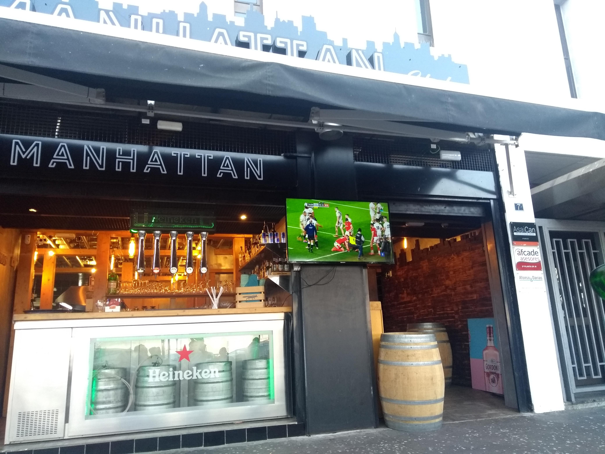
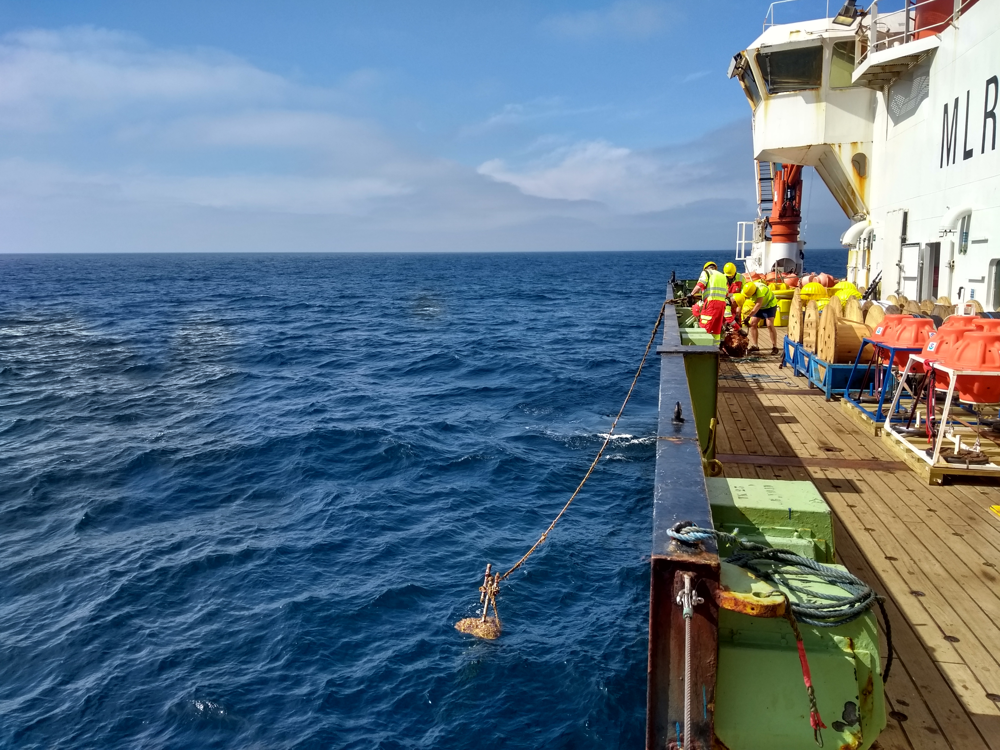
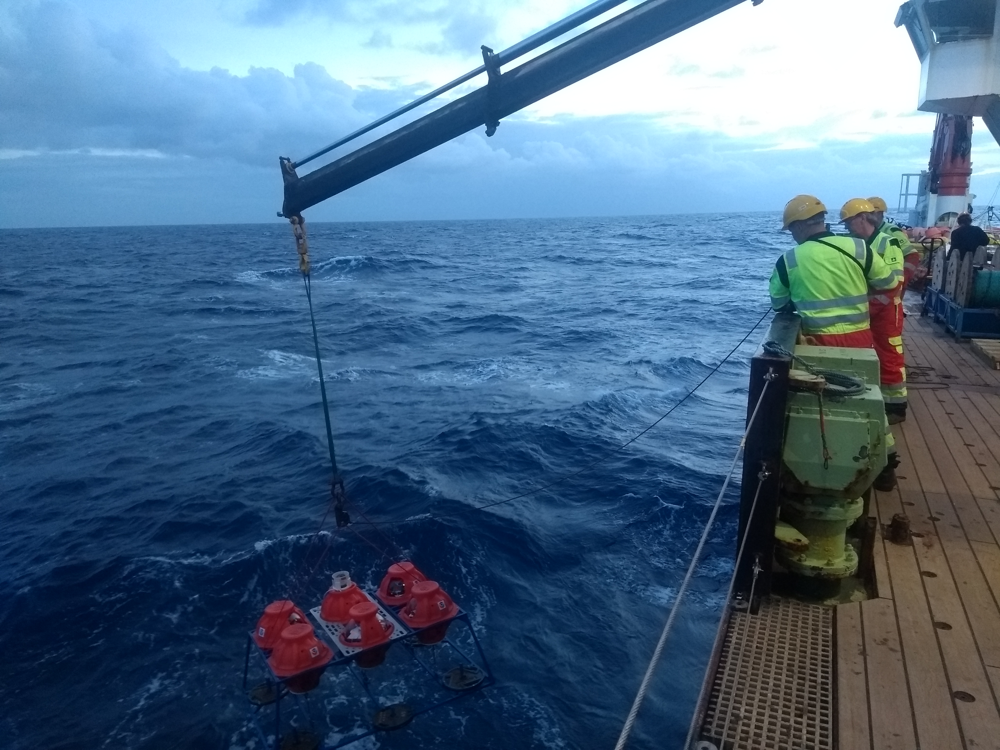
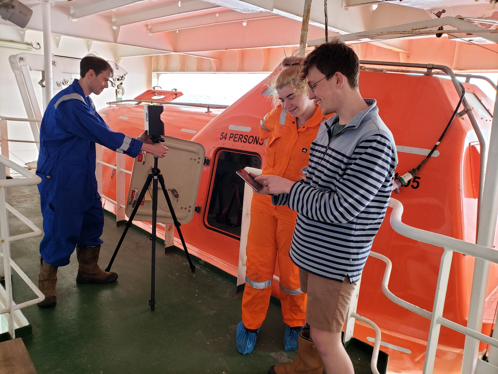
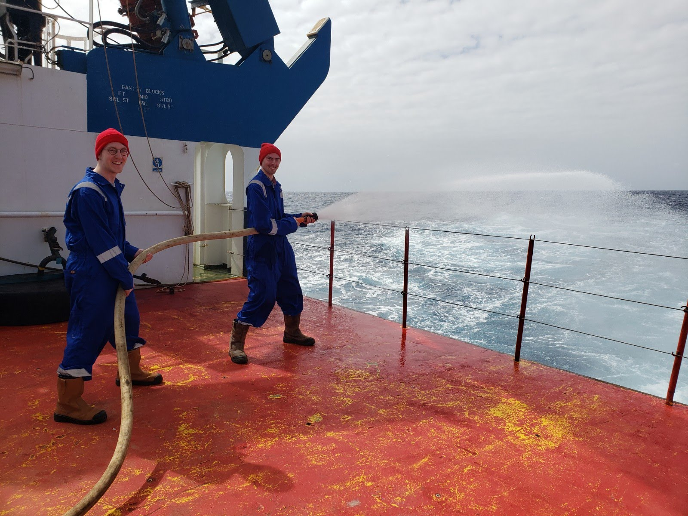
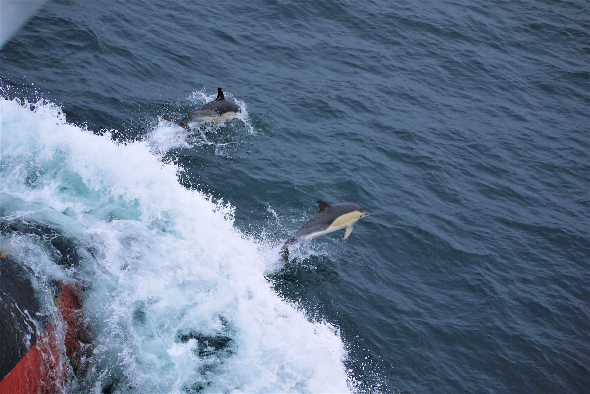
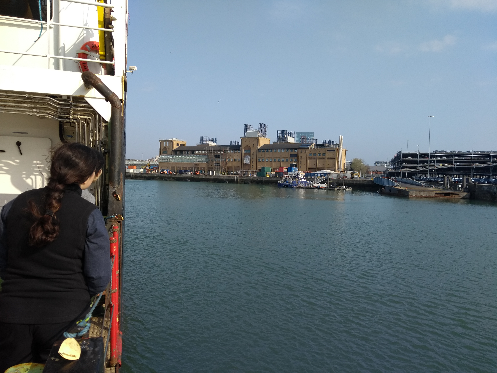

Posted on June 16, 2020
Cast your mind back to a time when things were normal -- the second weekend of March 2020. A time before lockdowns and social distancing; when pubs still opened, international travel was easy and live sports were a thing. This story starts in a bar in Tenerife, where a group of scientists, sailors and technicians were enjoying the sun and relishing in the sporting prowess of the England rugby team, as they stormed to victory over the Welsh. We were enjoying our last taste of normal, for what we thought would be a short six weeks. The team was about to embark on a voyage of discovery across the Atlantic, solving some of the many mysteries of the Atlantic Meridional Overturning Circulation (AMOC).
Our last taste of normality at a Tenerife bar, as England beat Wales in the Six Nations Rugby. Credit: Matt Clark
The expedition was part of the RAPID project (https://www.rapid.ac.uk/rapidmoc/) which has been continuously monitoring the AMOC since 2004. The backbone of the project is the RAPID array of around 20 or so moorings. These are situated along the 26.5N parallel, stretching from the Canary Islands in the East and Bahamas in the West. The moorings are concentrated off the West coast of Morocco, the mid-Atlantic ridge, and the East of the Bahamas. They're a real feat of engineering, with some more than 5 km tall. Dotted along the length of the moorings’ anchor wires are MicroCAT (CTD) instruments measuring conductivity, temperature, and pressure, which with geostrophic balance can be used to estimate the strength of the ocean circulation. There’s also a host of more exotic instruments such as current meters, oxygen sensors, remote autonomous samplers and others.
Once a mooring is released from the seabed, grappling and retrieving to deck is a rather manual process. Credit: Matt Clark.
Back to our story -- the crew had been tasked with recovering, servicing and redeploying these moorings. Within a day or so we were well on our way and getting stuck into the laborious process of hunting down and laying out moorings. Thankfully (for variety is the spice of life) there were more than just moorings to keep us occupied. Back in Tenerife we had been joined by scientists from NOAA who had entrusted us with a precious cargo -- a set of 12 glass spheres containing pressure inverted echo-sounders. These 'PIES', as they are affectionately known, may one day become ubiquitous in the global ocean monitoring system. It is hoped that they will be able to replicate some of the functionality of a mooring, but at a fraction of the cost. The PIES are lowered (read: lowered to the surface then dropped for a descent of several thousand metres) to the bottom of the ocean where they remain for a year, measuring the properties of the water column above them. When they're done measuring they then release their anchor and float up to the surface, beaming back their data to satellites. Though the system has undergone extensive testing, this is the first time they have been deployed in anger -- as their data comes in, it will be fascinating to see how successful their deployment has been!
Deploying one of two PIES arrays. Credit: Matt Clark.
Having completed the servicing of the Eastern section of the array we embarked on a 4 day steam to the mid-Atlantic ridge, with a brief pause to deploy an Argo float (http://www.argo.ucsd.edu/). Around half way through the passage, a meeting of all the ships company was called. The ship had received a message informing us we were to turn around and steam back to Southampton. It must be said that this wasn't unexpected. When we left the Canaries, we were aware of the coronavirus and its increasingly rapid spread. It was strange at sea watching the situation unfold, being so very isolated from everything going on back at home. We saw first the toilet roll shortages, then, as the days went on, it became clear things were becoming serious and the virus was causing a huge amount of suffering. Within three days of the decision to turn back having been made, the UK went into lockdown -- it was clear heading home was the right decision.
It was to be a long and slow steam back, but we were safe and there were still many other things to keep us occupied.....
Our 10-day voyage to Southampton gave us ample time to complete our cruise report sections, as standard for all research cruises. We also had enough time to complete some more unusual tasks such as 3D mapping the ship, using a special 3D imaging camera kindly lent to us by colleagues at BAS. Whilst the mapping began back in Tenerife, the additional no-science days allowed us to complete the project. It was an amazing opportunity to enter areas that us scientists wouldn’t normally work in: crawling (literally) around the engine room, workshops and thruster room. It was also an opportunity to chat to the engineers who keep the ship running. We also managed to map one of the two lifeboats. The completed scans will be used in future public outreach activities.
Matt (L) and Fraser (R) map the starboard lifeboat under the watchful gaze of cadet Lisa (Centre). Credit: Eleanor Frajka-Williams/RAPID Twitter.
The return journey also gave the captain the perfect excuse to hold another muster and fire drill for the crew. Whilst the crew were busy extracting a simulated “casualty” from the engine room in full breathing apparatus and fire-proof suits, we were given the much less stressful task of “boundary cooling the fire” from the aft deck. In reality, this meant aiming the hoses overboard and seeing how far you could propel the water.
Fire hose practice requires teamwork! Credit: Eleanor Frajka-Williams/RAPID Twitter.
We may not be marine biologists, but we were delighted to see many dolphins keeping us company on our return journey, with a brief glimpse of a whale. Other non-science cruise highlights were the amazing sunsets we got almost each evening. It was a real treat to spend many an evening on the bridge and Forecastle Deck stargazing under the clearest skies we’re likely to come across. From conversations with the very friendly and knowledgeable bridge crew, we gained more insight into the operation of the ship too. Some of us also got steering lessons!
Dolphins escort us across the Bay of Biscay. Credit: Matt Clark.
After 20 days at sea, on Saturday 28th March we arrived at the Port of Southampton and tied up alongside the National Oceanography Centre. All our equipment was put into cages and lifted onto the quayside. Of course this was all done with social distancing in mind, with quayside staff not allowed to come aboard to assist for fear of infecting us. Once the majority of this was done, all scientists and technicians signed off and went home to sit out the lockdown and discover what this “new normal” is all about. In some sense we were very lucky: many commercial seafarers are still stranded offshore with no end in sight to their ordeal. We had also been at sea for the panic buying stage of the pandemic and supermarket stock levels had mostly recovered! Despite our cruise being cut short, the 3 weeks we spent at sea certainly taught us a great deal about time series data collection and was a valuable experience. Of course, we would like to thank chief scientist Ben Moat for inviting us to come aboard, and to all scientists, tech and crew who made the cruise an enjoyable success.
Home sweet home: approaching the National Oceanography Centre Southampton. Credit: Matt Clark.
Back to top ↑ Blog Home Website Home